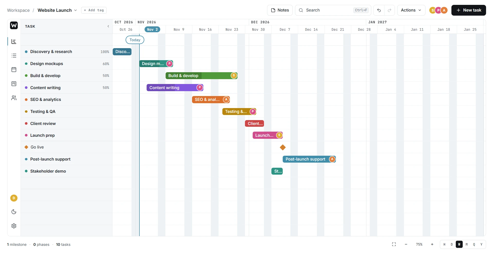

Plan the whole project. Spot the clashes before they happen.
Cronelo puts every task on one timeline, then shows the same plan as a list, a calendar, a board and a team workload. Change it in one place and every view keeps up.
Free while in early access. Works in your browser, nothing to install.
One plan, five ways to look at it
Each view reads from the same project, so you never copy work between tools. Pick whichever answers the question in front of you.

Watch a project come together
Two minutes in the app: a new project built up task by task on the timeline, then the list, the calendar, cards moving across the board and a workload clash being fixed.
Built for people who plan for a living
Cronelo is light enough for one person, and clear enough to plan a whole team’s work.
| WHO | WHAT THEY PLAN | BEST VIEW |
|---|---|---|
| Freelancers and agenciesWeb designers, developers, consultants and the studios they work in | Each client in its own project, from discovery to launch, with every deadline in one place. | Timeline, by week |
| Event plannersWeddings, conferences, festivals and anything with a run sheet | Run sheets down to the minute. The hour scale shows exactly what happens when, and who’s on it. | Timeline, by hour |
| Small teamsOne person runs the plan, with each team member on their own tasks | One plan with everyone on it, and Workload flagging anyone booked on two things at once. | Board and Workload |
Free while in early access
Every feature in the app is free to use. A Premium plan with extra features may follow, and the features you use today will stay free.
Early access
- Includes
- Every feature in the app today
- Views
- Timeline, list, calendar, board and workload
- Works on
- Desktop and mobile browsers
- Account
- Sign up with your email address
Premium
- Includes
- Everything in Early access
- Extras
- Being decided with early members
- Price
- To be announced
- Your plan
- Today’s features stay free
Made by someone who needed it
I built Cronelo to plan my own work: client websites that run for weeks, and detailed events that run to the minute. The tools I tried were either too simple to show who was doing what, or so heavy they needed a training course.
Cronelo sits in between. It’s quick to set up and shows the whole plan at once. When something doesn’t add up, such as one person booked twice, it tells you. It’s free while I shape it, and your feedback decides what comes next.
Louis TuckerMaker of Cronelo
Your projects, your data
- Projects save to your account and sync, so you can pick up on any device.
- Your data is never sold or shared with advertisers.
- No card details are needed to use Cronelo.
Common questions about Cronelo
Is Cronelo really free?
Yes. Everything in the app today is free while Cronelo is in early access. A Premium plan with extra features may come later, and the features you already use will stay free.
Do I need to install anything?
No. Cronelo runs in your web browser on a computer or phone. Sign in and your projects are there.
Can I plan work for a team?
Yes, as the person who runs the plan. Add your team in the project settings, put each of them on tasks, and use the Workload view to see who is booked on two things at the same time. They don’t need an account. For now, only you can see and edit your projects.
How detailed can a timeline get?
Zoom from hours to years. Plan a launch across several months, or an event minute by minute, using the same tool.
What will Premium include?
That’s still being decided, and early members get a say. If Cronelo is missing something you need, email me your idea.